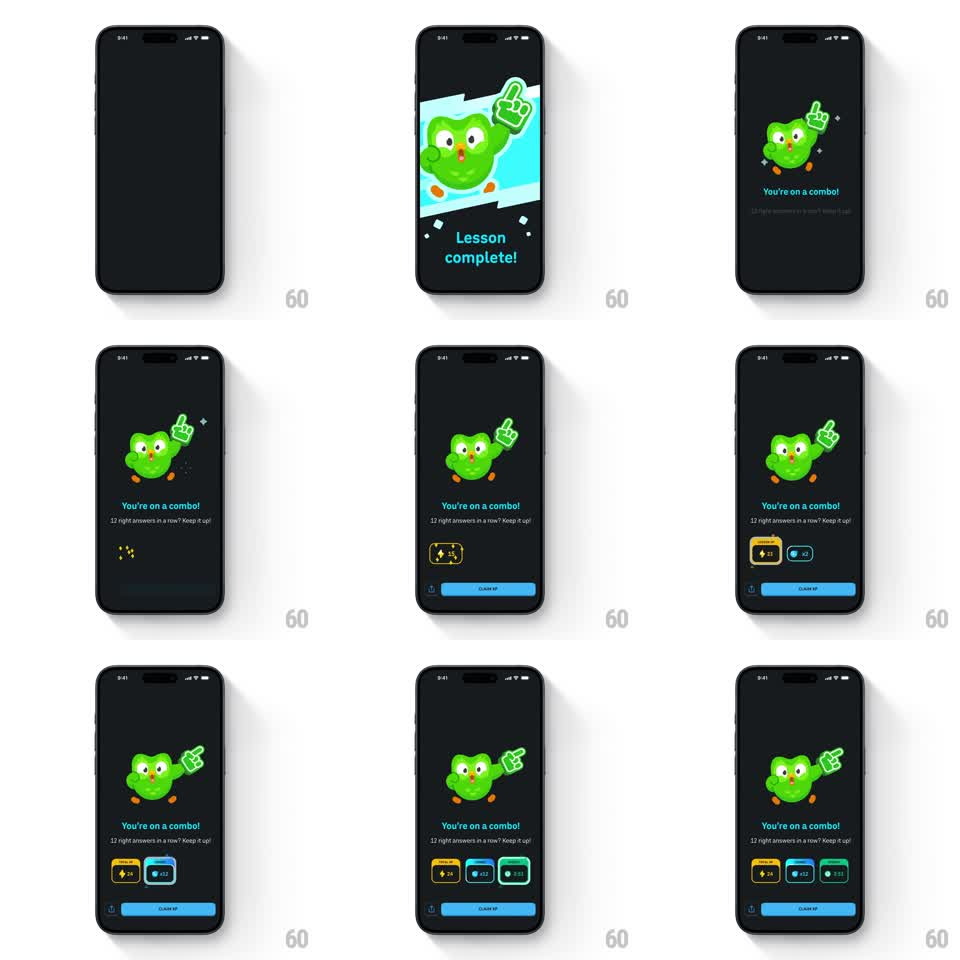

Media
Frame-by-frame

Rebuild this animation 1:1: Duolingo's combo celebration - the owl waves a giant foam finger on a dark stage while "You're on a combo!" lands, then reward chips (XP, combo multiplier, time) pop in one by one above the CLAIM XP button.

Rebuild this animation 1:1: Duolingo's combo celebration - the owl waves a giant foam finger on a dark stage while "You're on a combo!" lands, then reward chips (XP, combo multiplier, time) pop in one by one above the CLAIM XP button. ## Integration Integration: stack-agnostic spec - springs given as stiffness/damping, timed motions as duration + curve; map every value to your framework and animation library of choice. ## Scene Dark celebration screen: owl holding up a foam #1 finger, headline "You're on a combo!", subline "12 right answers in a row? Keep it up!", a row of stat chips, blue CLAIM XP button. ## Motion spec Pattern: character entrance + staggered chip cascade, ~2s. - Entrance: a blue burst card scales in behind the owl (300ms) and fades to the dark stage; the owl springs in (scale 0.75 -> 1, spring ~320/17) with the foam finger leading (slight overshoot rotation, +-6deg settle). - Foam finger wiggle: gentle wave loop (rotate +-5deg at the wrist, 1.2s) with two sparkle twinkles per cycle. - Chips: pop in left to right (scale 0.6 -> 1, spring ~400/16, 130ms stagger); the combo-multiplier chip gets an extra glow pulse on landing (300ms). - Copy fades in under the mascot; button slides up last (250ms). ## Calibration - The foam finger is the hero prop - it moves; the owl's body barely does. - Chips always land with the same spring; the stagger, not variety, creates rhythm. ## Reduced motion Owl fades in; chips fade in together (200ms). ## Don't miss - The blue burst is one-shot; the dark stage is the resting state. - The multiplier chip (x12) is visually distinct - it carries the combo story.